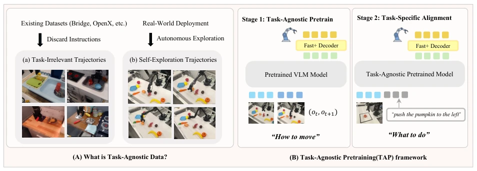
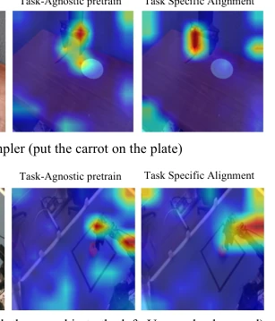
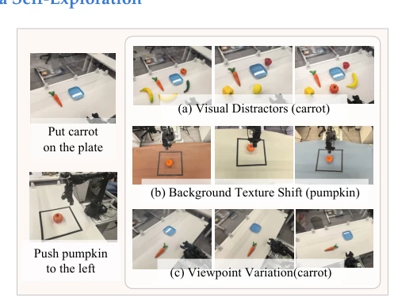
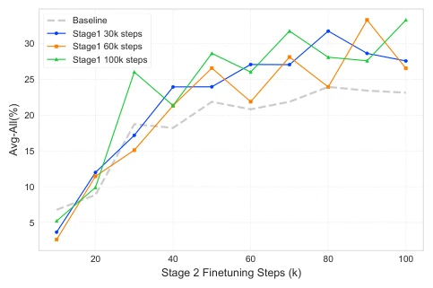
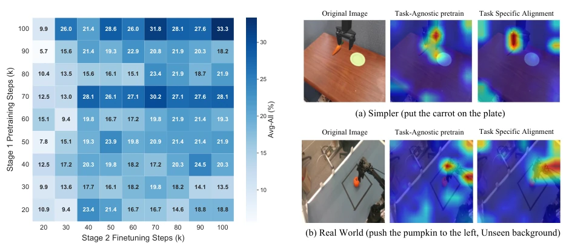
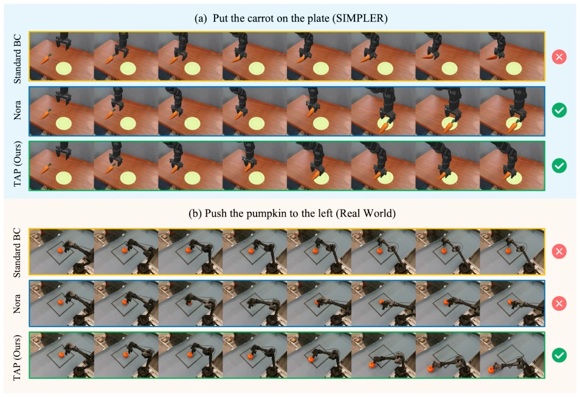

This paper implements a "baby-like" education for VLA models, advocating learning how to move (physical common sense) first, then what to do (semantic alignment). The core operation is to use task-agnostic data (such as discarded trajectories) for inverse dynamics pretraining, saving expensive expert demonstrations. Although "move first, speak later" sounds consistent with human developmental logic, can inverse dynamics really learn sufficient physical common sense? In experiments, WidowX maintains a 25% success rate under camera perturbation, while the baseline drops to 0%, which is indeed noteworthy. However, if the self-exploration safety strategy is not configured properly, the robot might have damaged itself long ago. Additionally, this method essentially decouples "physics" and "semantics"; for tasks requiring complex reasoning, knowing how to move alone may not be enough. Overall, this is a clever breakthrough against the "data wall", but do not expect it to solve all long-horizon planning problems.
The development of VLA models is constrained by the scarcity of expert demonstration data [4]. Existing mainstream methods such as OpenVLA [2], Octo [3], and pi0 [5] rely on massive amounts of manual teleoperation data, which are costly and difficult to scale. This passive collection mode ignores the value of robot autonomous exploration. Human infants acquire physical common sense through task-free spontaneous exploration (motor babbling), rather than directly imitating instructions. The paper points out that the VLA bottleneck lies in confusing "physical ability (how to move)" and "semantic alignment (what to do)". The former requires no language supervision, while the latter does. Existing work such as MIDAS [22] or Vi-PRoM [25] involves dynamics learning, but mostly as auxiliary objectives. This paper aims to utilize cheap task-agnostic data (such as discarded trajectories, autonomous play) to pretrain physical priors, reducing dependence on expensive expert data and solving the data wall problem.
Proposes a Task-Agnostic Pretraining (TAP) framework, divided into two stages. Stage 1: Task-Agnostic Pretraining. Utilizes cheap unlabeled interaction data, including trajectories of irrelevant tasks in existing datasets (such as Bridge data) and robot autonomous random play data. Adopts Inverse Dynamics self-supervised objective, input adjacent observations $(o_t, o_{t+1})$, predict action $a_t$. This forces the visual encoder to focus on dynamic changes (such as manipulator motion, object displacement), ignore static backgrounds, and learn physical priors. Stage 2: Task-Specific Alignment. Uses a small amount of expert demonstration data (containing language instructions $l$), fine-tunes via Behavior Cloning. Input becomes $(o_t, l)$, predict action. This stage maps semantic instructions to the learned dynamics space. In terms of data collection, autonomous exploration ensures rich and safe interaction through a safe posture library (Voxel Grid Downsample) and contact heuristic (Contact Heuristic). The overall process decouples physical learning and semantic learning, enabling the model to learn "how to move" in Stage 1 and "what to do" in Stage 2.

Figure 1 Overview of the Proposed Task-Agnostic Pretraining (TAP) Framework. (a) Data Sources: We leverage massive amounts of cheap, unlabeled interaction data—sourced from existing heterogeneous datasets (e.g., Bridge) or autonomous robot self-exploration —discarding any original task labels. (b) Stage 1 (Task-Agnostic Pretraining): The model is pretrained using a self-supervised Inverse Dynamics (ID) objective. By predicting the action 𝑎𝑡required to transition between frames 𝑜𝑡and 𝑜𝑡+1, the model learns robust physical affordances and motor control (”how to move”) without human supervision. (c) Stage 2 (Task-Specific Alignment): The pretrained model is then finetuned on a small set of language-annotated expert demonstrations. This stage aligns the prelearned physical priors with high-lev

Figure 5 Attention Map Analysis. Comparison across simulation (top) and real-world deployment (bottom). Middle: Task-agnostic pretraining yields attention focused on manipulable entities (gripper, objects) without any lan- guage input. Right: Instruction tuning refines attention toward robotic agents (grippers). The consistency across domains confirms that learned physical priors transfer ro- bustly to novel environments.
Evaluated on the SIMPLER benchmark and real WidowX 250s robot. Comparison baselines include standard Behavior Cloning (BC), OpenVLA [2], NORA [29], Octo [3], and pi0 [5]. SIMPLER results show that TAP-20k reaches 33.32% in Avg-All success rate, significantly better than standard BC (23.15%), and close to models trained with million-level data. In real-world experiments, TAP uses only 200 expert demonstrations + 30 hours of self-exploration, maintaining 15-25% success rate under visual interference, background texture offset, and viewpoint changes, while the baseline drops to 0% under viewpoint changes. Ablation studies show that pretraining scale determines the performance ceiling, and attention maps show Stage 1 focuses on manipulation objects, Stage 2 focuses on the manipulator. Proving the generalization and robustness of physical priors.

Figure 2 Real-World Evaluation Setup and Robustness Protocols. We evaluate our method on a physical WidowX 250 robot across two manipulation tasks: Put carrot on plate and Push pumpkin. To rigorously quantify resilience to dis- tribution shifts (RQ3), we introduce systematic environmen- tal perturbations: (a) Visual Distractors introduce unseen clutter (e.g., diverse fruits) to test semantic attention mech- anisms; (b) Background Texture Shifts alter surface mate- rials to evaluate visual invariance; and (c) Viewpoint Vari- ations perturb camera extrinsics to assess geometric gener- alization. Combined with Initial State Perturbations, these scenarios probe the boundaries of model robustness beyond the training distribution.

Figure 3 Convergence Dynamics. Avg-All success rates during Stage 2 finetuning. Initial learning rates are com- parable across methods, but the Baseline (dashed) plateaus early while pretrained models (solid) achieve substantially higher final performance—demonstrating that task-agnostic pretraining expands learning capacity rather than accelerat- ing convergence.

Figure 4 Data Scaling Analysis for Overall Success (Avg- All). Heatmap of Avg-All success rates on the SIMPLER benchmark across a joint sweep of Stage 1 (task-agnostic pretraining) and Stage 2 (task-specific finetuning) dura- tions. The upward gradient along the pretraining axis dominates the horizontal gradient along the finetuning axis, revealing that the scale of task-agnostic exposure sets the achievable performance ceiling.

Figure 6 Qualitative Comparison in Simulation and Real-World Environments. (a) On the SIMPLER “Put the carrot on the plate” task, Standard BC fails to execute the final grasp, while Nora and TAP succeed. (b) On the real-world “Push the pumpkin to the left” task under an unseen background, Standard BC exhibits poor contact. The Nora baseline suffers from a visual grounding failure; it attempts a leftward push but misjudges the pumpkin’s location due to the novel texture, pushing empty space. TAP accurately isolates the object despite the background shift and successfully completes the task.